Show the code
regionIds <- regions |> filter(level %in% 0:1)
unsentenced <- getHRDx("VC_PRS_UNSNT", params = list(where = list(datetime = select_years(years = 2010:2026)), regionId = regionIds))
# eda(unsentenced, detailed = TRUE)Indicators
unsentenced detainees (VC_PRS_UNSNT)
human trafficking (VC_HTF_DETVR, VC_HTF_DETVSXR, VC_HTF_DETVOPR, VC_HTF_DETVOGR, VC_HTF_DETVFLR)
TIER 3: incidence of disappearance
link to right to freedom of opinion and expression for HRDs? or highlight disappearances here as well?
regionIds <- regions |> filter(level %in% 0:1)
unsentenced <- getHRDx("VC_PRS_UNSNT", params = list(where = list(datetime = select_years(years = 2010:2026)), regionId = regionIds))
# eda(unsentenced, detailed = TRUE)ghro_line("VC_PRS_UNSNT", label_format = "percent", scale_y_args = list(limits = c(25, 35)), theme_args = list(font_size = 28))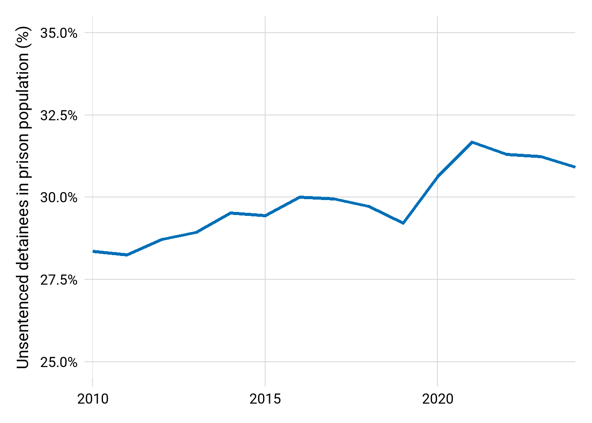
ghro_line("VC_PRS_UNSNT", level = "regional", line_args = list(linewidth = .75), theme_args = list(font_size = 28), region_label_size = 9) + theme(plot.margin = margin(r = 50))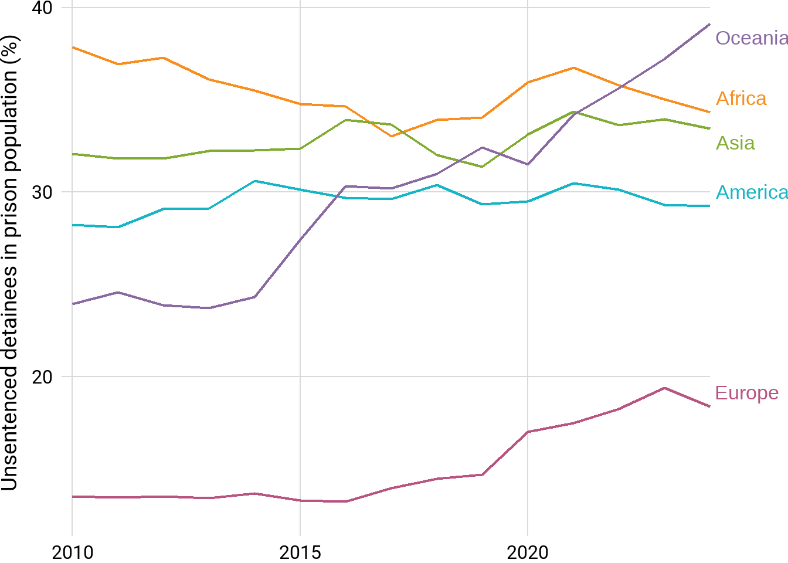
ghro_region_bar("VC_PRS_UNSNT", theme_args = list(font_size = 28))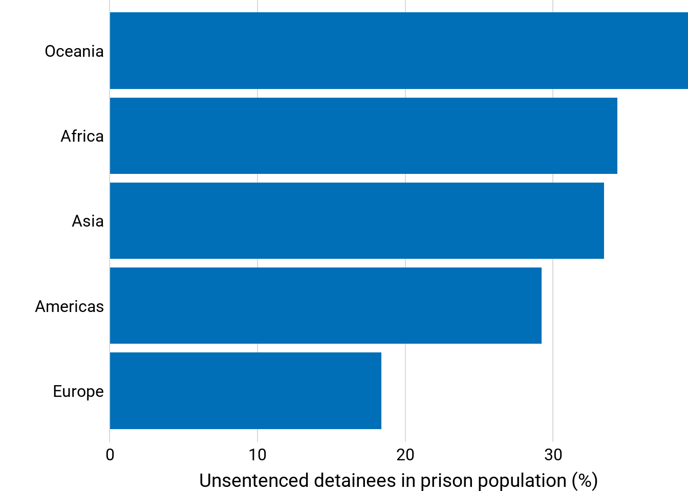
Gendered differences?
unsentenced |>
filter(sexCode != "_T", datetime == max(datetime)) |>
inner_join(regions |> filter(level == 1), by = "regionId") |>
ggplot(aes(x = value, y = fct_reorder(name, value))) +
geom_line(aes(group = name), linewidth = .75) +
geom_point(aes(color = sexCode), size = 5) +
scale_color_ghro("gender", name = NULL, labels = c("F" = "Female", "M" = "Male")) +
theme_ghro_bar(orientation = "horizontal", font_size = 28) +
theme(legend.position = "top") +
scale_x_continuous("% of prison population that is unsentenced", labels = scales::percent_format(scale = 1))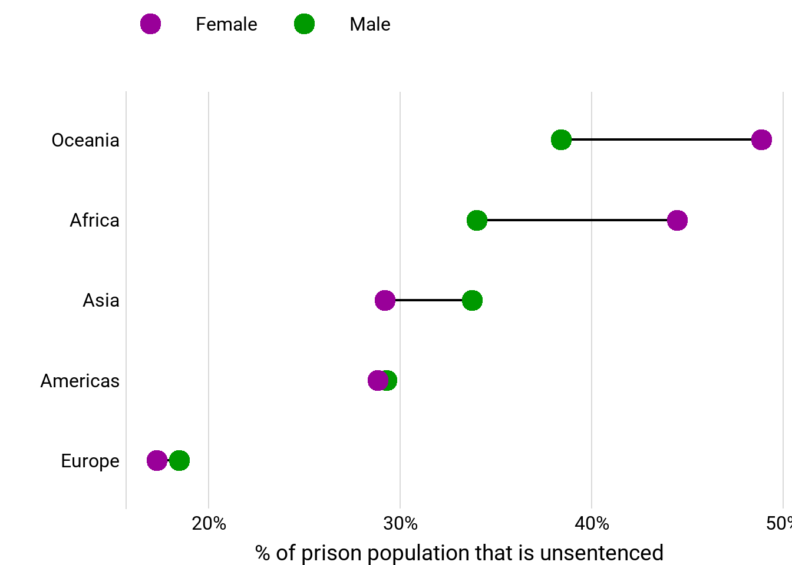
(VC_HTF_DETVR, VC_HTF_DETVSXR, VC_HTF_DETVOPR, VC_HTF_DETVOGR, VC_HTF_DETVFLR)
Rate per 100,000 is VC_HTF_DETVR
ds <- getHRDx("VC_HTF_DETVR", params = list(where = list(datetime = select_years(), sexCode = "_T", ageCode = "_T"))) |>
group_by(datetime) |>
summarize(n_obs = n(),
value = mean(value),
regionId = "1") |>
filter(n_obs > 20)
ghro_line(hrdxData = ds, scale_y_args = list(name = "Human trafficking victims\n(Rate per 100,000 population)"))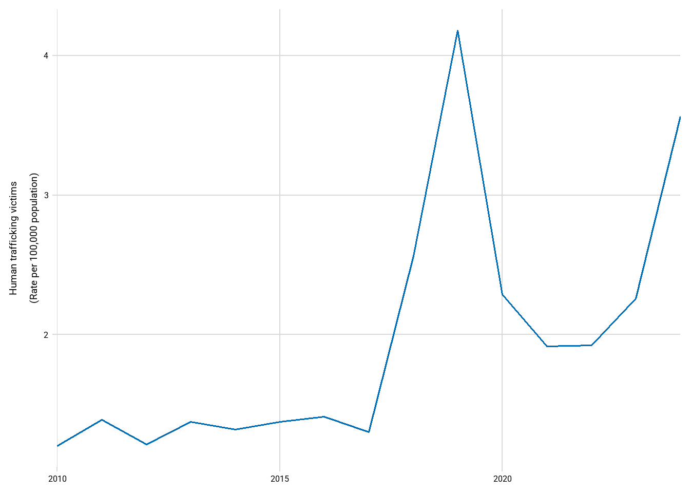
Since no region breakdowns available, keep it global and look at disaggs ?
getHRDx("VC_HTF_DETVR", params = list(where = list(datetime = select_years(), sexCode = c("M", "F"), ageCode = "_T"))) |>
select(sexCode, countryId, datetime, value) |>
pivot_wider(names_from = "sexCode", values_from = "value") |>
drop_na() |>
pivot_longer(c(M, F), names_to = "sexCode") |>
group_by(datetime, sexCode) |>
summarize(n_obs = n(),
value = mean(value, na.rm = TRUE),
regionId = "1") |>
filter(n_obs > 20) |>
ggplot(aes(x = year(datetime), y = value)) +
geom_line(aes(group = year(datetime)), linewidth = .75) +
geom_point(aes(color = sexCode), size = 5) +
scale_color_ghro("gender", name = NULL, labels = c("M" = "Male", "F" = "Female")) +
theme_ghro_line(font_size = 28) +
scale_x_continuous(NULL) +
scale_y_continuous("Human trafficking victims\n(rate per 100,000 population)") +
theme(legend.position = "top", axis.title.y = element_text(lineheight=.6))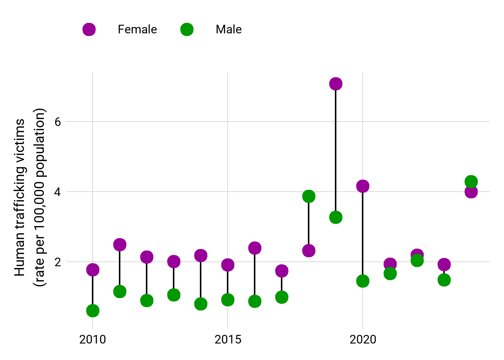
getHRDx("VC_HTF_DETVR", params = list(where = list(datetime = select_years(), sexCode = "_T", ageCode = c("Y_GE18", "Y0T17")))) |>
select(ageCode, countryId, datetime, value, sexCode) |>
pivot_wider(names_from = "ageCode", values_from = "value") |>
drop_na() |>
pivot_longer(c(Y_GE18, Y0T17), names_to = "ageCode") |>
group_by(datetime, ageCode) |>
summarize(n_obs = n(),
value = mean(value, na.rm = TRUE),
regionId = "1") |>
filter(n_obs > 20) |>
ggplot(aes(x = year(datetime), y = value)) +
geom_line(aes(group = year(datetime)), linewidth = .75) +
geom_point(aes(color = ageCode), size = 5) +
scale_color_ghro("cats2", name = NULL, labels = c("Y_GE18" = "18 and older", "Y0T17" = "<18 years old")) +
theme_ghro_line(font_size = 28) +
scale_x_continuous(NULL) +
scale_y_continuous("Human trafficking victims\n(rate per 100,000 population)") +
theme(legend.position = "top", axis.title.y = element_text(lineheight=.6))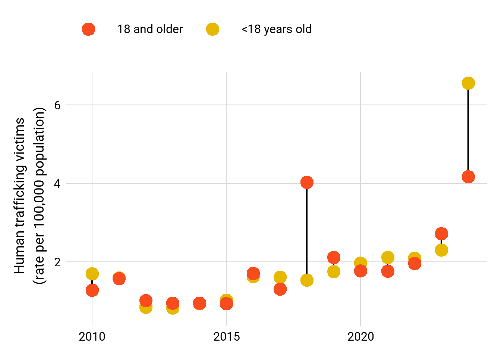
In 2024, the rate of human trafficking for minors was 1.5 times higher that of those who are 18 and older. This is using data where there were 62 countries in 2024, that had data for both age groups.
Sexual exploitation is VC_HTF_DETVSXR
getHRDx("VC_HTF_DETVSXR", params = list(where = list(datetime = select_years(), sexCode = c("M", "F"), ageCode = "_T"))) |>
select(sexCode, countryId, datetime, value) |>
pivot_wider(names_from = "sexCode", values_from = "value") |>
drop_na() |>
pivot_longer(c(M, F), names_to = "sexCode") |>
group_by(datetime, sexCode) |>
summarize(n_obs = n(),
value = mean(value, na.rm = TRUE),
regionId = "1") |>
filter(n_obs > 20) |>
ggplot(aes(x = year(datetime), y = value)) +
geom_line(aes(group = year(datetime)), linewidth = .75) +
geom_point(aes(color = sexCode), size = 5) +
scale_color_ghro("gender", name = NULL, labels = c("M" = "Male", "F" = "Female")) +
theme_ghro_line(font_size = 28) +
scale_x_continuous(NULL) +
scale_y_continuous("Sexual exploitation victims\n(rate per 100,000 population)") +
theme(legend.position = "top", axis.title.y = element_text(lineheight=.6))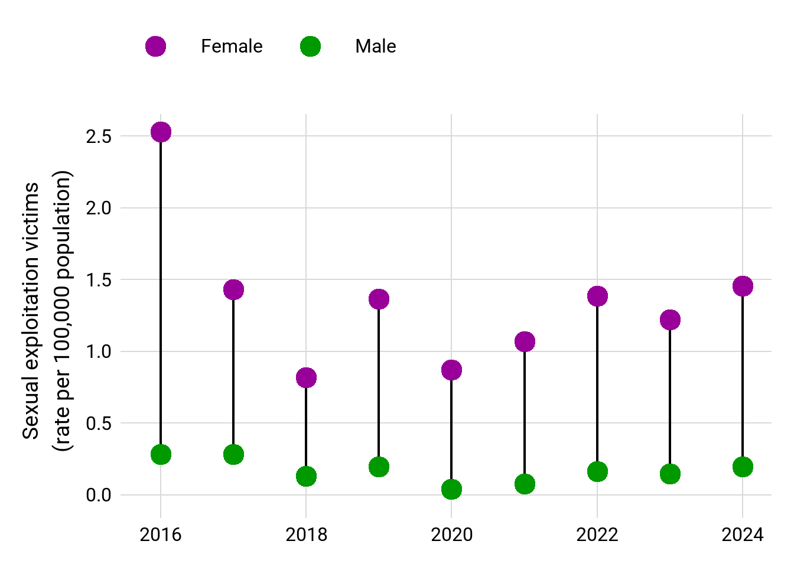
Rate for women has dropped significantly since 2016. Other than that and the fact that women are 6x more likely to be victims of sexual exploitation, not sure if time trend is super interesting/helpful
getHRDx("VC_HTF_DETVSXR", params = list(where = list(datetime = select_years(years = 2024), sexCode = c("M", "F"), ageCode = c("Y0T17", "Y_GE18")))) |>
select(sexCode, ageCode, countryId, datetime, value) |>
pivot_wider(names_from = c("sexCode", "ageCode"), values_from = "value") |>
drop_na() |>
pivot_longer(c(M_Y0T17, F_Y0T17, M_Y_GE18, F_Y_GE18), names_to = c("sexCode", "ageCode"), names_sep = 2) |>
mutate(sexCode = str_sub(sexCode, 1, 1)) |>
group_by(datetime, sexCode, ageCode) |>
summarize(n_obs = n(),
value = mean(value, na.rm = TRUE),
regionId = "1") |>
mutate(age = case_when(str_detect(ageCode, "18") ~ "18 and older",
.default = "Under 18")) |>
ungroup() |>
ggplot(aes(y = age, x = value)) +
geom_line(aes(group = age), linewidth = .75) +
geom_point(aes(color = sexCode), size = 5) +
scale_color_ghro("gender", name = NULL, labels = c("F" = "Female", "M" = "Male")) +
theme_ghro_bar("horizontal", font_size = 28) +
scale_x_continuous("Sexual exploitation victims\n(rate per 100,000 population)", limits = c(0, 2), expand = c(0, 0)) +
theme(legend.position = "top", axis.title.y = element_text(lineheight=.6))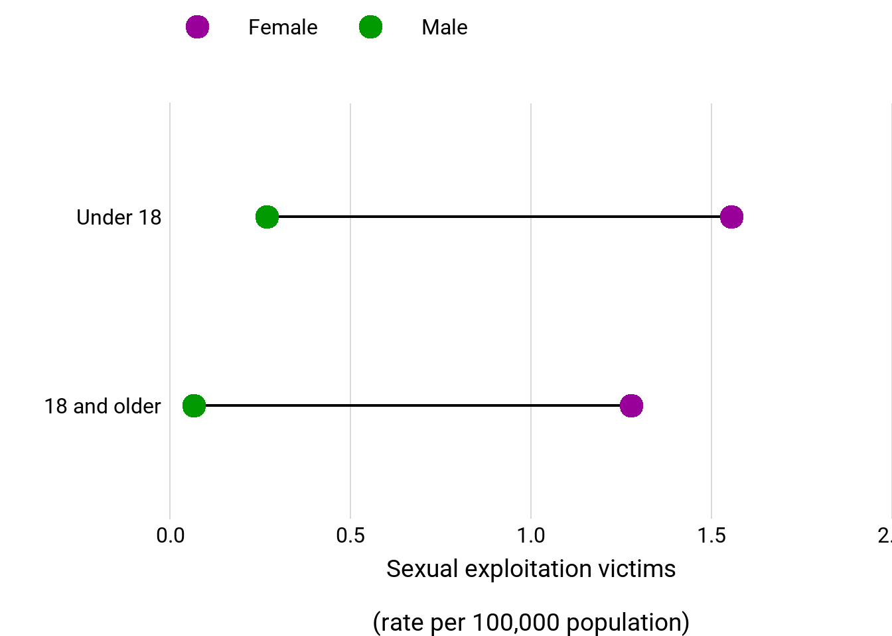
Those under 18 are more likely to be victims of sexual exploitation. Data from 2024 from 13 countries.
Organ removal is VC_HTF_DETVOGR
getHRDx("VC_HTF_DETVOGR", params = list(where = list(datetime = select_years(), sexCode = c("M", "F"), ageCode = "_T"))) |>
select(sexCode, countryId, datetime, value) |>
pivot_wider(names_from = "sexCode", values_from = "value") |>
drop_na() |>
pivot_longer(c(M, F), names_to = "sexCode") |>
group_by(datetime, sexCode) |>
summarize(n_obs = n(),
value = mean(value, na.rm = TRUE),
regionId = "1") |>
filter(n_obs > 20) |>
ggplot(aes(x = year(datetime), y = value)) +
geom_line(aes(group = year(datetime)), linewidth = .75) +
geom_point(aes(color = sexCode), size = 5) +
scale_color_ghro("gender", name = NULL, labels = c("M" = "Male", "F" = "Female")) +
theme_ghro_line(font_size = 28) +
scale_x_continuous(NULL) +
scale_y_continuous("Organ removal victims\n(rate per 100,000 population)") +
theme(legend.position = "top", axis.title.y = element_text(lineheight=.6))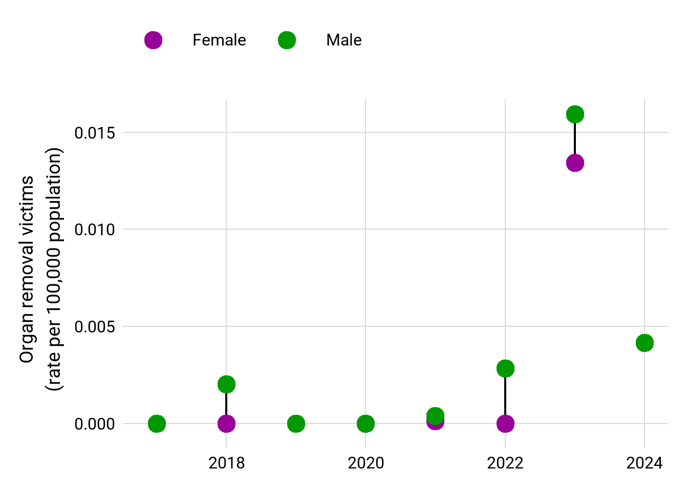
so low, not sure if worth analyzing
Forced labour, servitude and slavery is VC_HTF_DETVFLR
getHRDx("VC_HTF_DETVFLR", params = list(where = list(datetime = select_years(), sexCode = c("M", "F"), ageCode = "_T"))) |>
select(sexCode, countryId, datetime, value) |>
pivot_wider(names_from = "sexCode", values_from = "value") |>
drop_na() |>
pivot_longer(c(M, F), names_to = "sexCode") |>
group_by(datetime, sexCode) |>
summarize(n_obs = n(),
value = mean(value, na.rm = TRUE),
regionId = "1") |>
filter(n_obs > 10) |>
ggplot(aes(x = year(datetime), y = value)) +
geom_line(aes(group = year(datetime)), linewidth = .75) +
geom_point(aes(color = sexCode), size = 5) +
scale_color_ghro("gender", name = NULL, labels = c("M" = "Male", "F" = "Female")) +
theme_ghro_line(font_size = 28) +
scale_x_continuous(NULL) +
scale_y_continuous("Forced labour, servitude and slavery victims\n(rate per 100,000 population)") +
theme(legend.position = "top", axis.title.y = element_text(lineheight=.6))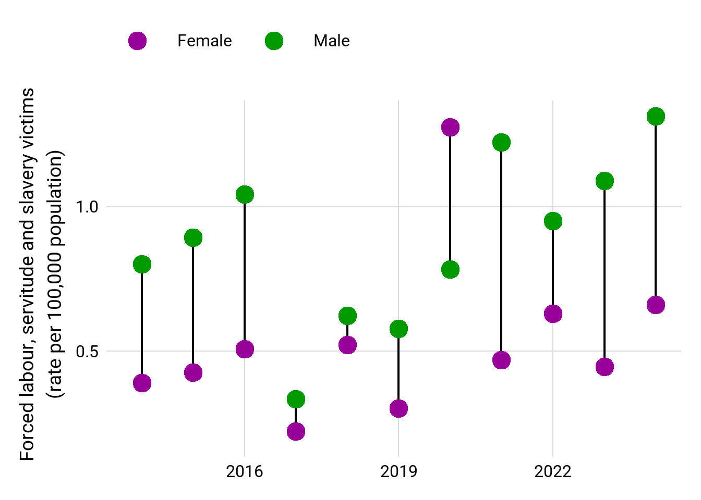
Men more likely to be in forced labour, etc.
Could frame as overall human trafficking this year is quite close (as in it affects men and women just as badly and rose significantly for both men and women), but looking at different types demonstrates gender gaps (women more affected by sexual exploitation - particularly girls, men by forced labour)
attackTypes <- hrdxDisaggregations |> filter(disagg == "attackType", str_detect(name, "disappear")) |> pull(code)
# getHRDx("VC_HRD_KIDISDE", params = list(where = list(attackTypeCode = attackTypes, areaType = "World"))) # only has data for 2023 and 2024 whereas UNSDG database has data since 2015
library(jsonlite)
library(httr)
res <- GET(url = "https://unstats.un.org/sdgs/UNSDGAPIV5/v1/sdg/Series/Data?seriesCode=VC_VOC_ENFDIS")
n_pages <- fromJSON(content(res, "text"), flatten = TRUE)$totalPages
VC_VOC_ENFDIS <- list()
for (n in 1:n_pages) {
page_res <- GET(url = paste0("https://unstats.un.org/sdgs/UNSDGAPIV5/v1/sdg/Series/Data?seriesCode=VC_VOC_ENFDIS&page=", n))
d <- fromJSON(content(page_res, "text"), flatten = TRUE)$data
VC_VOC_ENFDIS[[n]] <- d
}
enf_dis <- rbind_pages(VC_VOC_ENFDIS)enf_dis_world <- enf_dis |> filter(geoAreaName == "World", timePeriodStart != 2025, dimensions.Sex == "BOTHSEX") |> rename(datetime = timePeriodStart, regionId = geoAreaCode) |> select(regionId, datetime, value) |> mutate(value = as.integer(value), datetime = as.Date(as.character(datetime), format = "%Y"))
ghro_line(hrdxData = enf_dis_world, y_label = "Number of enforced disappearances\nof human rights defenders", theme_args = list(font_size = 28)) +
scale_x_continuous(NULL, breaks = seq(2015, 2024, by = 3)) +
theme(axis.title = element_text(lineheight = .6))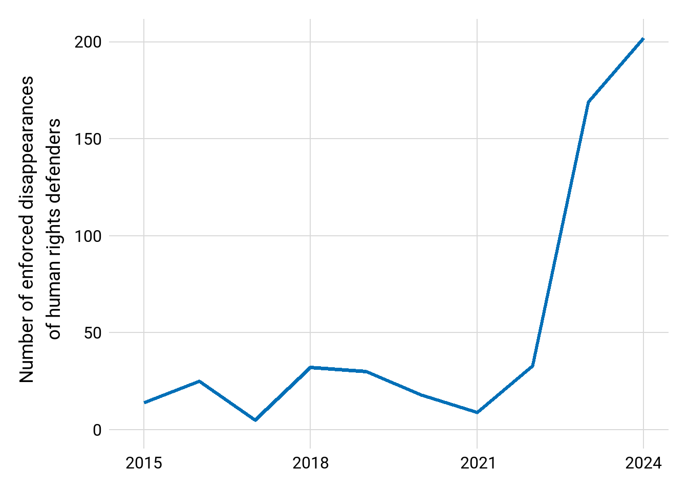
enf_dis_regions <- enf_dis |> filter(geoAreaName != "World", timePeriodStart == 2024, dimensions.Sex == "BOTHSEX") |> mutate(value = as.integer(value)) |> filter( !is.na(value))
enf_dis_regions |>
ggplot(aes(x = value, y = forcats::fct_reorder(stringr::str_wrap(geoAreaName, 20), value))) +
geom_col(fill = "#006fb7") +
theme_ghro_bar("horizontal", font_size = 28, x_label = "Number of enforced disappearances\nof human rights defenders") +
theme(text = element_text(lineheight = .6))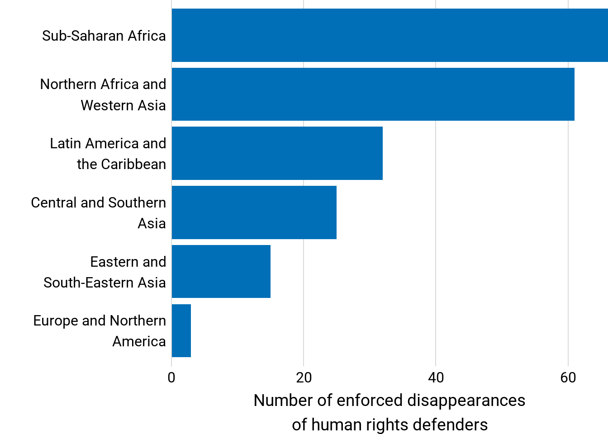
Number of countries with disappearances?
country_enfdis <- getHRDx("VC_HRD_KIDISDE", params = list(where = list(attackTypeCode = attackTypes, areaType = "Country", datetime = select_years(years = 2024))))
cat("In 2024,", nrow(country_enfdis |> filter(value != 0)), "countries had at least one disappearance of a human rights defender.")In 2024, 81 countries had at least one disappearance of a human rights defender.And then further exploration, link to freedom of expression?